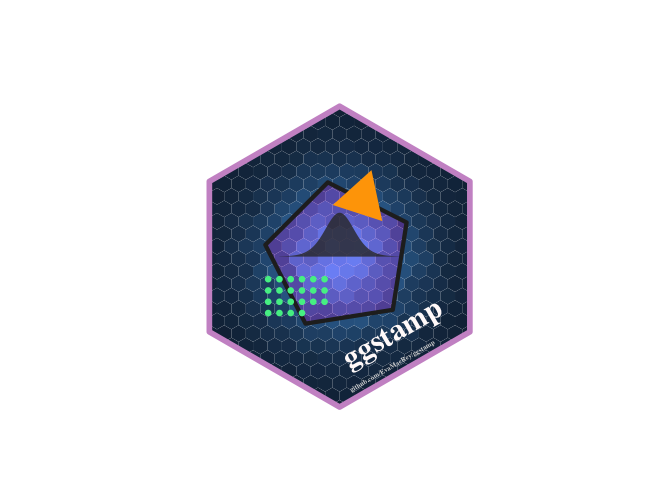

{ggstamp} on github
‘In God we trust, all others must bring data.’ - W. Edwards Deming.
Annotation layers must also ‘bring data’ … or do they?

The goal of ggstamp is to provide convenience functions for creating annotation layers in the ggplot2 and grammar of graphics framework. It is experimental; let’s see where things lead.
In some ways, Deming’s quote parallels the experience of analysts using ggplot2. Adding geom_* layers feels almost godly (geom_point() = ‘let there be points’, geom_boxplot() ‘let there be boxplots’!). But annotation layers are subject to Deming’s burden of ‘bringing data’.
The geom_* calls feel lightweight and powerful because they refer to the already specified data and aesthetic mappings. Recall the definition of a data visualization
A data visualization is …
… is composed of geometric marks …
… that take on variation in visual channels (aesthetics) …
… that represent variables in a data set …
In practice, the data is declared first and second the aesthetic-variable encodings. Finally, with this groundwork laid which geometric mark should take on these aesthetics – the code call to get the layer feels light and nimble!
Because geom_* marks have the data already laid out, they don’t feel like you have to ‘bring data’.
So using geom_tile() or geom_point() or geom_line() feels a bit supernatural – ink spring up through the page based on the combination of 1) the data that lies beneath and 2) the geom_*() call.
Adding an annotation layer feels different. With annotation geoms/marks, you must simultaneously declare the mark/geom and data.
In ggplot2, use of the annotate() function is most often prescribed. It’s not so easy for newcomers to use.
‘ggstamp’ thinks about removing some of the thinking and focus that’s needed to create annotation layer.
First, they use a stamp prefix and then name the geom that’s desired, i.e. stamp_point(), stamp_text() - good for auto-complete IDEs (RStudio).
Also we include the arguments and descriptions so adjustments can more easily be made from IDE with argument previews.
Finally, the functions include default data! You will be able to check out what stamp_* functions do without any input (then you can adjust away from the defaults later); in other words ggstamp functions are ‘pre-inked’ (they’ll automatically bring data). They’ll ‘just work’ – maybe not as needed in their final form – but getting something out-of-the box can be a useful starting point for newcomers.
And the development version from GitHub with:
# install.packages("devtools")
devtools::install_github("EvaMaeRey/ggstamp")library(tidyverse)
library(ggstamp)
set.seed(1243)
tibble::tibble(x = rnorm(40000, sd = .7),
y = rnorm(40000, sd = .7)) %>%
ggplot() +
aes(x = x, y = y) +
geom_hex(show.legend = F, color = alpha("white", 0)) +
coord_equal() +
stamp_polygon_inverse(radius = 2, radius_outer = Inf
) +
stamp_polygon(alpha = .2, n = 5, size = 1.75,
fill = "magenta", color = "grey15",
rotation = -.55) +
stamp_polygon(radius = .4, n = 3,
x0 = .3, y0 = .77, rotation = -.4,
alpha = 1, fill = "orange", size = 0) +
stamp_text(angle = 30, label = "ggstamp",
x = .7, y = -1,
color = "snow1") +
stamp_text(angle = 30, label = "github.com/EvaMaeRey/ggstamp",
x = .7, y = -1.45, size = 1.8,
color = "grey85") +
stamp_polygon(radius = 2,
alpha = 0, size = 2,
color = "plum3") +
theme_void() +
ggxmean::stamp_normal_dist(sd = .2, alpha = .8, height = 1.5) +
stamp_point(xy = pos_wrap(n = 22, ncol = 6, width = .15, x0 = -.95, y0 = -.3), size = 1,
color = "seagreen2")